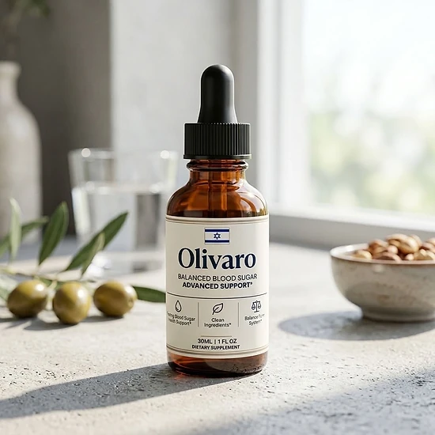

What Is Olivaro And How Does It Work?
Curious about Olivaro? In short, it is a liquid supplement you take by mouth with a dropper, made to offer nutritional support for balanced blood sugar, glucose metabolism, and overall metabolic health. The words on its label are "Balanced Blood Sugar Advanced Support", and it targets adults who want a low-effort daily step for their glucose health.
According to the official website, the formula mixes minerals with plant extracts that work in three directions: Chromium Picolinate to support how the body responds to insulin, Gymnema Leaf and African Mango to support healthy sugar absorption, and two adaptogens, Panax Ginseng and Maca, to help with tiredness and oxidative stress.
The Supplement Facts panel lists chromium and a 200 mg proprietary blend that holds more than twenty plant extracts and amino acids, from Green Tea and Guarana to Astragalus, Eleuthero, Grape Seed, and L-Carnitine.
Olivaro is not sold as an overnight solution. It is presented as gradual daily support that works together with balanced meals, movement, and sleep, so the body can keep energy steady and glucose levels balanced from morning to evening.
The official website also mentions support for carbohydrate metabolism, healthy insulin function, and weight management. Every person responds differently, so results vary.
What you get is a 30 ml (1 fl oz) dropper bottle with 30 servings of 1 ml each, a format that suits people who would rather skip capsules.
The label notes that Olivaro is manufactured in the USA in an FDA-registered facility with ingredients from around the world, and the official website shows GMP and non-GMO seals. It does not diagnose, treat, cure, or prevent any disease and is not a stand-in for medication prescribed by your doctor.
Olivaro Ingredients
Here is what the label shows. Each 1 ml serving of Olivaro provides chromium (as chromium picolinate), 0.7 mcg, plus a 200 mg proprietary blend. The official website puts six ingredients up front:
Chromium Picolinate: A trace mineral used to support the insulin response and the movement of glucose into cells.
Gymnema Leaf Extract: A plant from the Ayurvedic tradition used to support healthy sugar absorption and fewer cravings for sweets.
African Mango Seed Extract: Used to support metabolism and the way the body processes sugars and fats.
Green Tea Leaf Extract: A catechin source used to support metabolism and insulin sensitivity.
Maca Root Extract: An adaptogenic root used to support steady energy and a balanced stress response.
Panax Ginseng Aerial Extract: Used to support vitality and glucose uptake.
The rest of the blend is made of Guarana, Eleuthero, Grape Seed, Astragalus, Coleus Forskohlii, Capsicum, Grapefruit, Raspberry Ketones, L-Glutamine, L-Arginine, L-Tyrosine, Beta-Alanine, Monoammonium Glycyrrhizinate, GABA, L-Ornithine, L-Tryptophan, and L-Carnitine, without individual amounts.
Non-active ingredients are glycerin, water, stevia extract, organic lemon extract, xylitol, potassium sorbate, sodium benzoate, citric acid, and natural flavors.
Olivaro Side Effects
Is Olivaro safe to use? The official website says its ingredients are naturally derived, and the product is meant for adults who like a quick daily liquid to support healthy blood sugar levels and stable energy. Even so, it will not suit everyone, and the label and website give clear warnings worth reading first.
The official FAQ describes Olivaro as an active, stimulating supplement. With guarana, a natural source of caffeine, and green tea in the blend, people who react to stimulants should be careful. The official website asks anyone under 18 or with pre-existing health conditions, especially heart problems or high blood pressure, to consult a healthcare professional before starting.
The label tells pregnant or nursing mothers, children under 18, and anyone with a known medical condition to see a physician first. People on prescription drugs, including medication for blood sugar, should also talk to their doctor, since the formula is designed to support glucose metabolism. Stay within the recommended dose and do not use a bottle with a damaged or missing safety seal.
Per the label, Olivaro is made in the USA in an FDA-registered facility. It is not intended to diagnose, treat, cure, or prevent any disease, and it is not a substitute for medical care. If you notice any discomfort, stop and speak with a healthcare professional. Individual results may vary.
Olivaro Dosage
How do you use Olivaro? The label says to shake the bottle well before each use and take 1 or 2 full droppers a day, placing the liquid in your mouth and swallowing. No pills, no powders, nothing to mix.
The official website recommends the morning, ideally before a meal, as the best time. Using it at about the same time daily makes the habit easier to keep and helps the minerals and extracts work in a steady way.
Each bottle contains 30 ml (1 fl oz), with a 1 ml serving and 30 servings in the container, according to the Supplement Facts panel. Because the official website says the ingredients are meant to work over time, many customers prefer to plan a longer supply.
The routine is intentionally simple, with no complicated schedule. One daily serving is meant to add steady nutritional support to a balanced diet, regular physical activity, and enough rest.
As with any dietary supplement, do not go above the recommended dose. The label asks you to store the bottle in a cool, dry place, away from light, heat, and humidity, and out of children's reach. Olivaro works best with consistent daily use and healthy habits.
Olivaro – Refund Policy
Does Olivaro come with a guarantee? Yes. The official website describes a 60-day Results or Refund Guarantee counted from the date of purchase. If you have used it for at least 30 days and are not fully satisfied with the results, the product, or your overall experience, you can contact the support team.
The official returns page says a refund can be requested within 60 days of the original purchase date, and it recommends checking your delivery date with the tracking number on the carrier's website to confirm you are still within that period.
Steps to get a refund: send an email to customer support with "Refund Request" in the subject line, saying you are not fully convinced by the product. Then follow the instructions the support team sends you to finish the return.
How to contact customer support: contact@customercs.com, the email printed on the label, which also shows +1 (507) 448-8190. The official order page lists +1 (855) 889-3137 as well.
How long it takes: after the requirements are met and the request is approved, the refund is processed and can take several business days to appear on the original payment method, depending on your bank.
Because the refund policy is published on the official website, you can review every condition before ordering Olivaro.
Olivaro Customer Reviews
-
 Michael Thompson — Houston, TexasVerified Purchase – 6 Bottles
Michael Thompson — Houston, TexasVerified Purchase – 6 Bottles
“If it wasn't for Olivaro, I'd still be struggling with my blood sugar levels… But thank goodness I didn't have to do any of that, because just two weeks into taking Olivaro, I began to see my glucose readings stabilize and my energy levels soar.”
-
 Sarah Rodriguez — Chicago, IllinoisVerified Purchase – 6 Bottles
Sarah Rodriguez — Chicago, IllinoisVerified Purchase – 6 Bottles
“I was totally discouraged… dealing with constant blood sugar spikes and feeling tired all the time. It got to the point where I was afraid to enjoy a meal. But then I started on Olivaro, and day by day, my glucose levels became more balanced... I even noticed my cravings diminishing, without those sudden urges for sweets… And I swear, it felt like I regained control of my health in just 3 weeks!”
-
 Lauren Rio — Seattle, WashingtonVerified Purchase – 6 Bottles
Lauren Rio — Seattle, WashingtonVerified Purchase – 6 Bottles
“I was about to give up on finding something that actually worked… and then Olivaro showed up... Oh, what a relief!!! My blood sugar readings are now consistently in the healthy range, and I feel so much more energetic. I can hardly believe it, it's truly life-changing.”
Olivaro – Where To Buy
Where can you buy Olivaro? Through its official website, theolivaro.com, so it is worth being careful about where you order. Purchases are made on the official order page, and the official website does not send buyers to Amazon, Walmart, eBay, or other marketplaces.
Third-party listings may look alike, but there is no way to confirm they are genuine, which raises questions about safety, quality, and ingredient freshness, something that matters for a liquid product. A bottle bought outside the official source may not be covered by the 60-day guarantee.
That is why most buyers recommend ordering Olivaro only on the official website. Buying at the source means receiving the authentic original product, made in the USA, with customer support and the full guarantee. The official FAQ also says every order is a one-time payment, without auto-ship, hidden fees, or recurring charges.
Before you pay, make sure you are on the official Olivaro website, so you avoid counterfeit batches.
To ensure you’re getting the authentic product, most users choose to visit the official website.
Is Olivaro A Scam?
Is Olivaro legit? Going by the official website and the label, Olivaro does not appear to be a scam. It is a real liquid dietary supplement, sold through an established retailer, made to provide nutritional support for healthy blood sugar levels and glucose metabolism with regular use.
The label carries a full Supplement Facts panel with chromium and a 200 mg blend that includes Gymnema, Maca, Panax Ginseng, African Mango, and Green Tea, well-known names in wellness, although the dose of each blend ingredient is not shown.
The label also names the distributor, Instituto Experience of Lakeland, Florida, gives a phone number and support email, and states that the product is made in the USA in an FDA-registered facility.
Some points deserve attention. The formula contains guarana and the official website calls it a stimulating supplement, and the order page uses a countdown and low-stock messages to push quick decisions. Results differ from person to person, and no supplement replaces medical care or prescribed treatment.
Olivaro includes a 60-day Results or Refund Guarantee, and the official website says purchases are one-time payments with no auto-ship or hidden fees.
If you want an easy daily liquid to support healthy blood sugar levels and steady energy, Olivaro is worth a look, especially when bought from the official website after talking to your doctor if you take any medication.
For those who want to verify product details or check current availability, the official Olivaro website remains the safest option.

Check Availability On Official Website